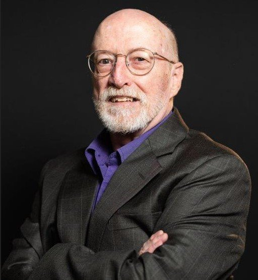

John T. Davis
President & Founding Principal
John founded the practice in 2011 and brings forty five years in the bioprocess industry. His work spans large molecule fermentation and cell culture, protein and nucleic acid purification, human plasma protein extraction by Cohn fractionation, vaccine manufacturing, and emerging cell and gene therapy modalities. Earlier roles include Sutro Biopharma, Cytovance Biologics, and FUJIFILM Diosynth Biotechnologies. He holds a degree in Biology from American University.